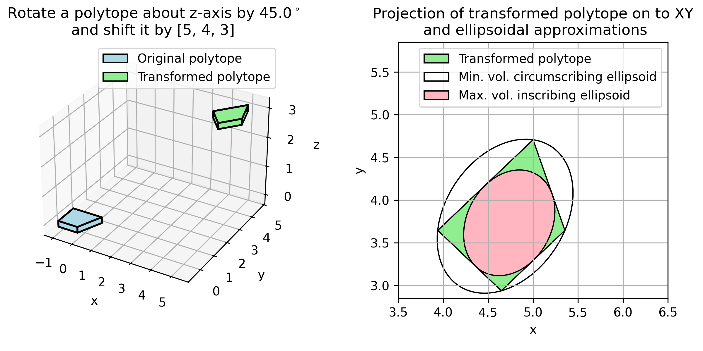

pycvxset: Convex sets in Python¶
What is pycvxset?¶
pycvxset is a Python package for manipulation and visualization of convex sets. Currently, pycvxset supports the following three representations:
polytopes,
ellipsoids, and
constrained zonotopes (which are equivalent to polytopes).
Some of the operations enabled by pycvxset include:
construct sets from a variety of representations and transform between these representations,
perform various operations on these sets including (but not limited to):
plot sets in 2D and 3D,
affine and inverse-affine transformation,
checking for containment,
intersection,
Minkowski sum,
Pontryagin difference,
projection,
slicing, and
support function evaluation.
See the Jupyter notebooks in examples folder for more details on how pycvxset can be used in set-based control and perform reachability analysis.
This repository is developed and maintained by Abraham P. Vinod.
Quick start¶
Requirements¶
pycvxset supports Python 3.9+ on Ubuntu, Windows, and MacOS. As described in setup.py, pycvxset has the following core dependencies:
pycddlib: pycvxset requires
pycddlib<=2.1.8.post1. We are working on removing this restriction.gurobipy: This dependency is optional. Almost all functionalities of pycvxset are available without Gurobi. However, pycvxset uses Gurobi (through cvxpy) to perform some containment and equality checks involving constrained zonotopes. See License section for more details.
Installation¶
Refer to .github/workflows for exact steps to install pycvxset for different OSes. These steps are summarized below:
OS-dependent pre-installation steps:
Ubuntu: Install gmp.
$ sudo apt-get install libgmp-dev
MacOS: Install pycddlib manually in order to link with gmp.
% brew install gmp % python3 -m pip install --upgrade pip % git clone https://github.com/mcmtroffaes/pycddlib.git % cd pycddlib % git checkout 2.1.8.post1 % git submodule update --init % ./cddlib-makefile-gmp.sh % env "CFLAGS=-I$(brew --prefix)/include -L$(brew --prefix)/lib" python3 -m pip install . % cd ..
These steps are adapted from pycddlib/build.yml.
Windows: No special steps required since pip takes care of it. If plotting fails, you can set matplotlib backend via an environment variable
set MPLBACKEND=Agg. See https://matplotlib.org/3.5.1/users/explain/backends.html#selecting-a-backend for more details.
Clone the pycvxset repository into a desired folder
PYCVXSET_DIR.Run
pip install -e .in the folderPYCVXSET_DIR.
Sanity check: Check your installation by running python3 examples/pycvxset_diag.py in the folder PYCVXSET_DIR. The script should generate a figure with two subplots, each generated using pycvxset.
Left subplot: A 3D plot of two polytopes (one at the origin, and the other translated and rotated). You can interact with this plot using your mouse.
Right subplot: A 2D plot of the projection of the polytope, and its corresponding minimum volume circumscribing and maximum volume inscribing ellipsoids.

Optional: Testing¶
Use
pip install -e ".[with_tests]"to install the additional dependencies.Run
$ ./scripts/run_tests_and_update_docs.shto view testing results on the command window.View code coverage from testing at
./docs/build/_static/codecoverage/overall/index.htmlon your browser.
Optional: Documentation¶
Use
pip install -e ".[with_docs_and_tests]"to install the additional dependencies.To produce the documentation,
Run
$./scripts/run_all.sh. This should take about 15 minutes. For faster but incomplete options,To generate just the latex files for the MANUAL.pdf, run
$./scripts/run_sphinx_pdf.sh. This command will assume that the environment has LaTeX setup properly.To build the API documentation without rendering the notebooks or coverage results, run
$./scripts/run_sphinx_html.sh.
View the documentation as,
PDF at ./MANUAL.pdf
HTML pages (without internet) at
localhost:8000after runningpython -m http.server --directory ./docs/build/.Documentation website is available at
./docs/build/index.html.View the Jupyter notebooks at
./docs/build/tutorials/tutorials.html.View code coverage from testing at
./docs/build/_static/codecoverage/overall/index.html.
Getting help¶
Let us say that you have read the manual and searched the Discussion and the Issue webpages, but still need help.
Please start a Discussion for…
Getting help in setting up pycvxset to work on your computer.
Advice on how to use pycvxset for your set manipulations problem.
Suggestions on documentation of the code.
Collecting ideas for potential new features/enhancements from the community.
Please open an Issue if you believe that fixing your problem will involve a change in the pycvxset source code. For example…
Bug reports.
New feature/enhancement proposals with details.
How to submit a good bug report? When opening an Issue, please consider providing:
High-level description of the behavior you would expect and the actual behavior.
Which version of pycvxset are you using? The bleeding edge or the version number.
OS (Windows, Linux, Mac, or something else)
Can you reliably reproduce the issue?
Details of the bug (a stack trace can be useful).
A reduced test case that reproduces the issue for our development team.
Contributing¶
See CONTRIBUTING.md for our policy on contributions.
License¶
pycvxset code is released under AGPL-3.0-or-later license, as found in the LICENSE.md file. The documentation for pycvxset is released under CC-BY-4.0 license, as found in the LICENSES/CC-BY-4.0.md.
All files:
Copyright (c) 2020-2025 Mitsubishi Electric Research Laboratories (MERL).
SPDX-License-Identifier: AGPL-3.0-or-later
except the following files:
.gitignore
README.md
pycvxset/Polytope/__init__.py
pycvxset/Polytope/operations_binary.py
pycvxset/Polytope/operations_unary.py
pycvxset/Polytope/plotting_scripts.py
pycvxset/Polytope/vertex_halfspace_enumeration.py
pycvxset/__init__.py
pycvxset/common/__init__.py
setup.py
tests/test_polytope_binary.py
tests/test_polytope_init.py
tests/test_polytope_vertex_facet_enum.py
which have the copyright
Copyright (C) 2020-2025 Mitsubishi Electric Research Laboratories (MERL)
Copyright (c) 2019 Tor Aksel N. Heirung
SPDX-License-Identifier: AGPL-3.0-or-later
SPDX-License-Identifier: MIT
The method contains in pycvxset/ConstrainedZonotope/operations_binary.py uses gurobipy (through cvxpy) and requires acceptance of appropriate license terms.
Acknowledgements¶
The development of pycvxset started from commit ebd85404 of pytope.
Copyright (c) 2019 Tor Aksel N. Heirung
SPDX-License-Identifier: MIT
pycvxset extends pytope in several new directions, including:
Plotting for 3D polytopes using matplotlib,
Interface with cvxpy for access to a wider range of solvers,
Introduce new methods for Polytope class including circumscribing and inscribing ellipsoids, volume computation, and containment checks,
Minimize the use of vertex-halfspace enumeration using convex optimization,
Include extensive documentation and example Jupyter notebooks,
Implement exhaustive testing with nearly 100% coverage, and
Support for Ellipsoid and ConstrainedZonotope set representations.
Contact¶
For questions or bugs, contact Abraham P. Vinod (Email: vinod@merl.com, abraham.p.vinod@ieee.org).